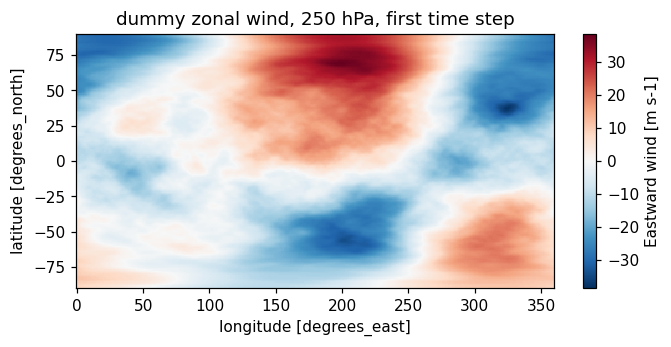
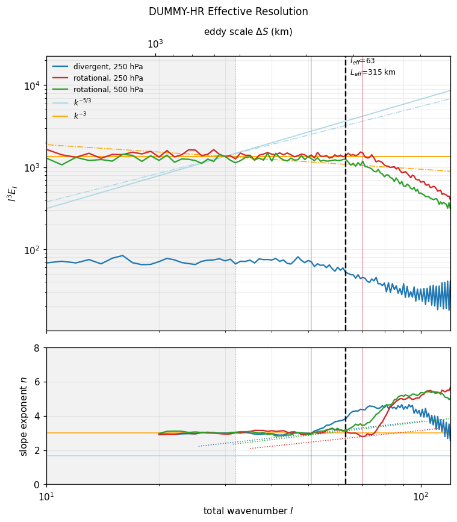
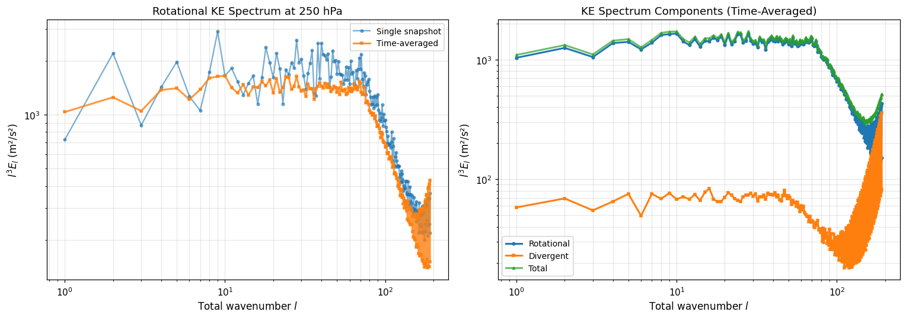

Effective Resolution Diagnostic Demo (ua, va)
This notebook demonstrates the effective resolution metric from Klaver et al. (2020), which objectively estimates the smallest spatial scale a climate model can plausibly represent.
Why This Matters
Climate models have a nominal resolution (grid spacing) and an effective resolution (actual smallest resolved scale). The difference arises because:
Numerical diffusion drains energy from small scales
Parameterizations represent sub-grid processes
Anti-aliasing filters prevent spectral artifacts
Interpolation between grid points smooths fields
The effective resolution is typically 2.7-4.8× coarser than the nominal grid spacing. This metric identifies where spectral energy begins to be artificially dissipated rather than representing atmospheric dynamics.
Key Concepts
Nominal Resolution: Grid spacing (e.g., 100 km)
Effective Resolution (L_eff): Actual smallest resolved scale (typically 2.7-4.8× coarser)
Detection Method: Find where KE spectrum steepens beyond reference power law
2-of-3 Confirmation: Requires at least 2 of 3 spectra (div_250, rot_250, rot_500) to steepen
Method Overview
Compute kinetic energy spectra from spherical harmonic transforms of winds
Fit spectral slopes in sliding 20-wavenumber windows
Detect steepening where slope increases by ≥25% over a wavenumber doubling
Apply 2-of-3 rule: Require at least 2 of 3 spectra (divergent 250hPa, rotational 250hPa, rotational 500hPa) to steepen
Reference
Klaver, R., Haarsma, R., Vidale, P. L., & Hazeleger, W. (2020). Effective resolution in high resolution global atmospheric models for climate studies. Atmospheric Science Letters, 21, e952. https://doi.org/10.1002/asl.952
1. Setup and Imports
[1]:
import numpy as np
import xarray as xr
import matplotlib.pyplot as plt
from pcmdi_metrics.effective_resolution import (
compute_effective_resolution,
process_effective_resolution,
)
from pcmdi_metrics.effective_resolution.lib import (
EARTH_RADIUS,
detect_steepening,
plot_resolution_scatter,
plot_spectra_and_slope,
representative_grid_box_distance,
)
%matplotlib inline
plt.rcParams["figure.dpi"] = 110
2. Generate Synthetic Data
To demonstrate the diagnostic, we’ll create synthetic wind data with prescribed kinetic energy spectra that roll off at specific wavenumbers.
How the Synthetic Data Works
Define target spectra with exponential roll-off at chosen wavenumbers (l=50, 70, 62 for div, rot@250, rot@500)
Generate random spherical harmonic coefficients with power matching the target spectrum
Inverse transform to create realistic wind fields (u, v) on a regular lat-lon grid
Normalize to have realistic wind speeds (~25 m/s RMS)
This allows us to test the diagnostic with known effective resolutions and verify it correctly identifies the spectral steepening.
Key Parameters
rolloff=(50, 70, 62): Wavenumbers where each spectrum steepens (div_250, rot_250, rot_500)decay=40: Controls how sharply the spectrum drops beyond rolloffGrid: 192×384 (roughly 1° resolution), 8 timesteps, 2 pressure levels (250, 500 hPa)
[2]:
from pcmdi_metrics.effective_resolution.lib.ke_spectra import _legendre
def random_coefficients(target_spectrum, rng, rsphere=EARTH_RADIUS):
"""Random vorticity/divergence coefficients whose power follows `target_spectrum`."""
ell = np.arange(target_spectrum.size, dtype=float)
ntrunc = ell.size - 1
with np.errstate(divide="ignore", invalid="ignore"):
variance = 2.0 * target_spectrum * ell * (ell + 1.0) / (rsphere**2 * (2 * ell + 1.0))
variance[0] = 0.0
coeffs = np.zeros((ntrunc + 1, ntrunc + 1), dtype=complex)
coeffs[:, 0] = np.sqrt(variance) * rng.normal(size=ntrunc + 1) # m = 0 must be real
for m in range(1, ntrunc + 1):
scale = np.sqrt(variance[m:] / 2.0)
size = ntrunc + 1 - m
coeffs[m:, m] = scale * (rng.normal(size=size) + 1j * rng.normal(size=size))
return coeffs
def synthesize_wind(ke_rot, ke_div, lat, nlon, rng, rsphere=EARTH_RADIUS):
"""Inverse spherical-harmonic transform: (u, v) with the requested KE spectra."""
ell = np.arange(ke_rot.size, dtype=float)
ntrunc = ell.size - 1
with np.errstate(divide="ignore", invalid="ignore"):
to_potential = np.where(ell > 0, -(rsphere**2) / (ell * (ell + 1.0)), 0.0)[:, None]
psi = to_potential * random_coefficients(ke_rot, rng) # streamfunction
chi = to_potential * random_coefficients(ke_div, rng) # velocity potential
mu = np.sin(np.deg2rad(lat))
cosphi = np.cos(np.deg2rad(lat))
u_f = np.zeros((lat.size, nlon // 2 + 1), dtype=complex)
v_f = np.zeros_like(u_f)
for m in range(ntrunc + 1):
p, h = _legendre(m, ntrunc, mu)
u_f[:, m] = (1j * m * (chi[m:, m][:, None] * p).sum(0)
- (psi[m:, m][:, None] * h).sum(0)) / rsphere
v_f[:, m] = (1j * m * (psi[m:, m][:, None] * p).sum(0)
+ (chi[m:, m][:, None] * h).sum(0)) / rsphere
u = np.fft.irfft(u_f, n=nlon, axis=1) * nlon / cosphi[:, None]
v = np.fft.irfft(v_f, n=nlon, axis=1) * nlon / cosphi[:, None]
return u, v
Create Dummy Dataset
This synthetic model has a 192×384 grid (roughly 1° resolution) with spectra that steepen around l~50-60.
[3]:
def make_dummy_dataset(nlat=192, nlon=384, ntime=8, seed=0,
rolloff=(50.0, 70.0, 62.0), rms_wind=25.0, decay=40.0):
"""A CMIP-like (time, plev, lat, lon) wind Dataset with a prescribed KE spectrum.
`rolloff` gives the cut-off wavenumber of the divergent spectrum, the rotational
spectrum at 250 hPa, and the rotational spectrum at 500 hPa.
"""
rng = np.random.default_rng(seed)
lat = np.linspace(-90.0 + 90.0 / nlat, 90.0 - 90.0 / nlat, nlat)
lon = np.arange(0.0, 360.0, 360.0 / nlon)
ell = np.arange(nlat, dtype=float)
with np.errstate(divide="ignore"):
power_law = np.where(ell > 0, ell**-3.0, 0.0)
def shaped(cut):
return power_law * np.exp(-np.maximum(ell - cut, 0.0) / decay)
div_cut, rot250_cut, rot500_cut = rolloff
per_level = {
250.0: (shaped(rot250_cut), 0.05 * shaped(div_cut)),
500.0: (shaped(rot500_cut), 0.05 * shaped(div_cut)),
}
u = np.empty((ntime, 2, nlat, nlon))
v = np.empty_like(u)
for it in range(ntime):
for ip, level in enumerate((250.0, 500.0)):
ke_rot, ke_div = per_level[level]
u_t, v_t = synthesize_wind(ke_rot, ke_div, lat, nlon, rng)
norm = rms_wind / np.sqrt((u_t**2 + v_t**2).mean())
u[it, ip], v[it, ip] = u_t * norm, v_t * norm
# Use proper datetime coordinates (required for temporal_averaging='slopes')
import pandas as pd
time_coords = pd.date_range('2014-03-01', periods=ntime, freq='6h')
ds = xr.Dataset(
{"ua": (("time", "plev", "lat", "lon"), u),
"va": (("time", "plev", "lat", "lon"), v)},
coords={"time": ("time", time_coords),
"plev": ("plev", np.array([25000.0, 50000.0])),
"lat": ("lat", lat),
"lon": ("lon", lon)},
)
ds["plev"].attrs.update(units="Pa", axis="Z", standard_name="air_pressure")
ds["lat"].attrs.update(units="degrees_north", axis="Y", standard_name="latitude")
ds["lon"].attrs.update(units="degrees_east", axis="X", standard_name="longitude")
ds["time"].attrs.update(axis="T", standard_name="time")
ds["ua"].attrs.update(units="m s-1", long_name="Eastward wind")
ds["va"].attrs.update(units="m s-1", long_name="Northward wind")
return ds
ds = make_dummy_dataset()
ds
[3]:
<xarray.Dataset> Size: 19MB
Dimensions: (time: 8, plev: 2, lat: 192, lon: 384)
Coordinates:
* time (time) datetime64[us] 64B 2014-03-01 ... 2014-03-02T18:00:00
* plev (plev) float64 16B 2.5e+04 5e+04
* lat (lat) float64 2kB -89.53 -88.59 -87.66 -86.72 ... 87.66 88.59 89.53
* lon (lon) float64 3kB 0.0 0.9375 1.875 2.812 ... 357.2 358.1 359.1
Data variables:
ua (time, plev, lat, lon) float64 9MB 8.062 7.951 ... -0.8033 -1.038
va (time, plev, lat, lon) float64 9MB 6.775 6.901 ... -14.28 -14.27Inspect the Data
Before computing effective resolution, let’s examine:
**Grid box distance (L̃_box)**: The area-weighted mean diagonal distance between grid points
This represents the model’s nominal resolution
For this 192×384 grid, L̃_box ≈ 134 km
Wind field visualization: Shows the synthetic atmospheric flow pattern
Notice the realistic spatial structure from inverse spherical harmonic transform
Contains scales from planetary waves down to grid scale
[4]:
lbox = representative_grid_box_distance(ds["lat"].values, ds["lon"].values)
print(f"representative grid box distance L_box = {lbox:.1f} km")
fig, ax = plt.subplots(figsize=(7, 3))
mesh = ds["ua"].isel(time=0, plev=0).plot(ax=ax, cmap="RdBu_r", add_colorbar=True)
ax.set_title("dummy zonal wind, 250 hPa, first time step")
plt.show()
representative grid box distance L_box = 134.0 km

3. Compute Effective Resolution
The main API function compute_effective_resolution() performs the complete diagnostic:
Processing Steps
Spherical harmonic transform → vorticity and divergence coefficients (exact, no finite differences)
Kinetic energy spectra → E(l) for rotational and divergent components at each pressure level
Temporal averaging → combine spectra across timesteps (by default: compute monthly slopes → average)
Spectral slope fitting → fit E ∝ l^(-n) in sliding 20-wavenumber windows to get n(l)
Steepening detection → find smallest l where n increases by ≥25% over wavenumber doubling
2-of-3 confirmation → require at least 2 of 3 spectra (div_250, rot_250, rot_500) to steepen
Effective resolution → median of detected wavenumbers → convert to length scale
Why This Approach Works
Spherical harmonics preserve high-wavenumber information (unlike finite differences)
Slope fitting smooths out noise while capturing spectral behavior
Steepening criterion identifies transition from resolved to numerically dissipated scales
2-of-3 rule provides robustness against spurious detections in individual spectra
[5]:
metrics, diagnostics = compute_effective_resolution(
ds,
uvar="ua",
vvar="va",
levels=(250.0, 500.0),
model="DUMMY-HR",
member="r1i1p1f1",
)
result = metrics["DUMMY-HR"]["r1i1p1f1"]
result
[5]:
{'effective_wavenumber': 63.0,
'effective_resolution_km': 315.2079888788274,
'grid_box_distance_km': 133.99631291692674,
'resolution_ratio': 2.352363151023759,
'resolution_ratio_dx_convention': 6.653487743609018,
'is_upper_limit': False,
'criterion': {'fit_window': 20,
'fit_anchor': 'right',
'steepening_factor': 0.25,
'wavenumber_ratio': 2.0,
'min_wavenumber': 32,
'n_confirm': 2},
'reference': 'Klaver et al. (2020), doi:10.1002/asl.952',
'n_spectra_steepening': 3,
'steepening_wavenumber': {'div_250': 51.0, 'rot_250': 70.0, 'rot_500': 63.0},
'steepening_eddy_scale_km': {'div_250': 388.6607799933854,
'rot_250': 283.9090806701491,
'rot_500': 315.2079888788274},
'steepening_wavenumber_range': [51.0, 70.0]}
[6]:
import pandas as pd
summary = pd.Series(
{
"effective wavenumber l_eff": result["effective_wavenumber"],
"effective resolution L_eff (km)": round(result["effective_resolution_km"], 1),
"grid box distance L_box (km)": round(result["grid_box_distance_km"], 1),
"ratio L_eff / L_box": round(result["resolution_ratio"], 2),
"ratio in the dx convention": round(result["resolution_ratio_dx_convention"], 2),
"spectra showing steepening": f"{result['n_spectra_steepening']} of 3",
"upper limit only": result["is_upper_limit"],
},
name="value",
)
print(summary.to_string())
print()
print("per-spectrum detections (wavenumber -> eddy scale):")
for key, wavenumber in result["steepening_wavenumber"].items():
scale = result["steepening_eddy_scale_km"][key]
print(f" {key:8s} l = {wavenumber} ΔS = {scale:.0f} km")
effective wavenumber l_eff 63.0
effective resolution L_eff (km) 315.2
grid box distance L_box (km) 134.0
ratio L_eff / L_box 2.35
ratio in the dx convention 6.65
spectra showing steepening 3 of 3
upper limit only False
per-spectrum detections (wavenumber -> eddy scale):
div_250 l = 51.0 ΔS = 389 km
rot_250 l = 70.0 ΔS = 284 km
rot_500 l = 63.0 ΔS = 315 km
Results Summary
The diagnostic returns comprehensive metrics:
Core Metrics
l_eff = 63: Effective wavenumber where spectrum steepens (median of 51, 70, 63)
L_eff = 315 km: Effective resolution = smallest plausibly resolved eddy scale
**L̃_box = 134 km**: Nominal grid box distance
Resolution Ratio
**L_eff / L̃_box = 2.35: The model resolves scales 2.35× larger** than its grid spacing
For real climate models, this ratio ranges from 2.7 to 4.8
Lower ratio = model resolves closer to grid scale (more effective)
Higher ratio = more energy lost to numerical dissipation
Per-Spectrum Detections
Shows where each component steepens:
div_250: l=51 → 389 km (divergent flow at 250 hPa steepens earliest)
rot_250: l=70 → 284 km (rotational flow at 250 hPa)
rot_500: l=63 → 315 km (rotational flow at 500 hPa)
The median (l=63) becomes the effective resolution since 3 of 3 spectra steepen (exceeds 2-of-3 threshold).
Physical Interpretation
Atmospheric features smaller than L_eff = 315 km in this model are dominated by numerical effects rather than resolved dynamics. Metrics computed at finer scales measure the numerical scheme, not the climate.
4. Visualize Spectra and Slope Detection
[7]:
fig = plot_spectra_and_slope(
diagnostics,
result,
xlim=(10, 120),
title="DUMMY-HR Effective Resolution"
)
plt.show()

Understanding the Visualization
This reproduces Figure 1 from Klaver et al. (2020) with two key panels:
Top Panel: Compensated Kinetic Energy Spectra (l³E_l)
Shows deviation from the theoretical k⁻³ power law for atmospheric turbulence
Flat plateau = spectrum follows k⁻³ (resolved scales)
Downward curve = spectrum steepens beyond k⁻³ (numerical dissipation)
Three lines for divergent@250, rotational@250, rotational@500
Compensating by l³ makes deviations from power law visually obvious
Bottom Panel: Spectral Slope Exponent n(l)
Shows fitted exponent where E ∝ l^(-n) locally
Horizontal at n≈3 = following k⁻³ power law (resolved)
Increasing n = spectrum steepening (transition to unresolved)
Critical curve (blue) = 25% steepening criterion
Vertical dashed lines = detected steepening wavenumbers (where slope crosses threshold)
What to Look For
Divergent spectrum (div_250) steepens earliest (l=51) → most sensitive indicator
Rotational spectra steepen later → represent large-scale balanced flow better
Effective resolution = median of the three detections → robust against outliers
Steepening = transition from atmospheric dynamics to numerical artifact
5. Advanced Usage
Temporal Averaging Strategies
The implementation offers two approaches for combining spectra across time, following different interpretations of Klaver et al. (2020):
Method 1: temporal_averaging='slopes' (Default)
Matches Appendix S3 of the reference paper:
Compute KE spectrum for each month separately
Fit spectral slopes to each monthly spectrum → n_month(l)
Average slope curves across months → n̄(l)
Detect steepening from averaged slopes
Advantage: Preserves information about temporal variability in spectral shape before averaging
Method 2: temporal_averaging='spectra' (Alternative)
Original implementation approach:
Average KE spectra first across all timesteps → Ē(l)
Fit slopes to the time-averaged spectrum → n(l)
Detect steepening from this single slope curve
Advantage: Simpler, reduces to one spectrum per component
When They Differ
For temporally stable spectra (like this synthetic example), both methods give identical results. Differences emerge when:
Seasonal cycles affect spectral shape
Different atmospheric regimes are present
Limited temporal sampling creates noise
For real climate data with seasonal variations, temporal_averaging='slopes' is recommended as it better represents the paper’s methodology.
[8]:
# Method 1: Average slopes (default, matches Klaver et al. Appendix S3)
metrics_slopes, _ = compute_effective_resolution(
ds,
temporal_averaging='slopes', # Compute monthly spectra → fit monthly slopes → average slopes
model="DUMMY-HR",
member="r1i1p1f1"
)
# Method 2: Average spectra (original implementation)
metrics_spectra, _ = compute_effective_resolution(
ds,
temporal_averaging='spectra', # Average spectra first → fit single slope curve
model="DUMMY-HR",
member="r1i1p1f1"
)
print("Temporal averaging comparison:")
print(f" slopes method: l={metrics_slopes['DUMMY-HR']['r1i1p1f1']['effective_wavenumber']}")
print(f" spectra method: l={metrics_spectra['DUMMY-HR']['r1i1p1f1']['effective_wavenumber']}")
print("\nNote: Results are often identical for temporally stable spectra")
Temporal averaging comparison:
slopes method: l=63.0
spectra method: l=63.0
Note: Results are often identical for temporally stable spectra
Parameter Sensitivity
Several parameters control the detection behavior. Understanding their effects helps tune the diagnostic for specific applications:
steepening_factor (default: 0.25)
Controls stringency of steepening detection
Criterion: slope must increase by this fraction over wavenumber doubling
Higher values (e.g., 0.30) → more stringent → detects later → coarser effective resolution
Lower values (e.g., 0.20) → less stringent → detects earlier → finer effective resolution
Paper uses 0.25 (25% increase) but notes it’s “somewhat arbitrary”
When to adjust: If detection seems too sensitive/insensitive to spectral features
min_wavenumber (default: 32)
Excludes low wavenumbers from detection
Prevents detection in planetary-scale range where spectral behavior may be irregular
Higher values (e.g., 50) → start looking later → may miss early steepening
Lower values (e.g., 20) → include more planetary scales → risk false detections
When to adjust: For coarse-resolution models where steepening occurs at low wavenumbers
Other Useful Parameters
fit_window(default: 20): Window size for slope fittingLarger = smoother slopes, less sensitive to noise
Smaller = captures finer spectral features, more noise-sensitive
fit_anchor(default: ‘right’): Where to assign fitted slope within window‘right’ = assign to highest wavenumber (literal paper reading)
‘center’ = assign to window midpoint (conventional)
‘left’ = assign to lowest wavenumber
ntrunc: Triangular truncation limit (default: nlat-1)Useful for matching specific truncation used in spectral models
Note: In this synthetic example, results are insensitive to these parameters because the prescribed rolloff creates very clear, stable steepening signals.
[9]:
# steepening_factor: threshold for detecting steepening (default 0.25 = 25%)
# Higher values → more stringent → later detection → coarser effective resolution
metrics_025, _ = compute_effective_resolution(ds, steepening_factor=0.25, model="test", member="r1i1p1f1")
metrics_030, _ = compute_effective_resolution(ds, steepening_factor=0.30, model="test", member="r1i1p1f1")
print("Steepening factor sensitivity:")
print(f" factor=0.25: L_eff={metrics_025['test']['r1i1p1f1']['effective_resolution_km']:.1f} km")
print(f" factor=0.30: L_eff={metrics_030['test']['r1i1p1f1']['effective_resolution_km']:.1f} km")
# min_wavenumber: exclude low wavenumbers from detection (default 32)
# Higher values → start detection later → may find coarser resolution
metrics_min32, _ = compute_effective_resolution(ds, min_wavenumber=32, model="test", member="r1i1p1f1")
metrics_min50, _ = compute_effective_resolution(ds, min_wavenumber=50, model="test", member="r1i1p1f1")
print("\nMinimum wavenumber restriction:")
print(f" min_l=32 (default): l_eff={metrics_min32['test']['r1i1p1f1']['effective_wavenumber']}")
print(f" min_l=50: l_eff={metrics_min50['test']['r1i1p1f1']['effective_wavenumber']}")
Steepening factor sensitivity:
factor=0.25: L_eff=315.2 km
factor=0.30: L_eff=315.2 km
Minimum wavenumber restriction:
min_l=32 (default): l_eff=63.0
min_l=50: l_eff=63.0
6. Important Notes and Caveats
Critical Data Requirements
It is recommended to use NATIVE GRID data** (grid_label='gn' in CMIP6) for this diagnostics:
❌ Do NOT use:
Regridded data (
grid_label='gr') → destroys high-wavenumber informationDaily mean winds → temporal smoothing removes small-scale transients
Coarse vertical resolution → limited to 250 and 500 hPa in standard implementation
Data on interpolated grids → introduces artificial spectral characteristics
✅ Required:
6-hourly (or finer) instantaneous winds on model’s native horizontal grid
Global coverage (method assumes spherical harmonic basis)
Variables:
ua,vaat 250 and 500 hPaPressure coordinates can be in Pa or hPa (auto-detected)
Physical Interpretation
What L_eff tells you:
Features smaller than L_eff are dominated by numerical dissipation, not resolved dynamics
Metrics evaluated at scales < L_eff measure the numerical scheme, not the climate
L_eff sets a lower bound for meaningful process studies in the model
What L_eff does NOT tell you:
Nothing about fidelity of scales larger than L_eff (a model can have good L_eff but poor large-scale spectrum)
Nothing about vertical resolution (diagnostic is horizontal-only)
Nothing about temporal resolution or transient representation
Known Limitations
Global time-mean approach:
May mask phenomenon-dependent resolution (tropical convection vs. extratropical storms)
Single value doesn’t capture regional or seasonal variations
Ad hoc threshold:
25% steepening criterion is “somewhat arbitrary” (authors’ words)
Different thresholds shift detected wavenumber by ~10-20%
Vertical sparsity:
Only 2 levels tested (250, 500 hPa)
Focuses on troposphere; may not represent stratosphere or boundary layer
Divergent spectrum exclusion at 500 hPa:
Paper finds div_500 steepens at all scales → provides no useful signal
Excluded from 2-of-3 confirmation rule
Comparison with Reference Paper
This implementation uses strict algorithmic detection of the 25% criterion. The reference paper (Klaver et al. 2020 Table 1) used visual inspection with expert interpretation of “broader spectral behavior.”
Expected differences: Results may differ by 10-30% from Table 1 values, which is acceptable given the methodological difference:
Reference approach: Visual assessment + physical interpretation → not reproducible
This implementation: Objective algorithm → reproducible for model intercomparison
Recommendation: Use results to compare models relative to each other, not to expect exact Table 1 reproduction.
Further Information
Full methodology: See README.md and Klaver et al. (2020) paper
Investigation of discrepancies: See
tests/DISCREPANCY_ANALYSIS.mdReal model examples: See test notebooks in
tests/directory
7. Advanced: Direct KE Spectra Analysis
For advanced users who want just the kinetic energy spectra without running the full effective resolution diagnostic, you can use the standalone spectral functions:
compute_ke_spectra(): Single snapshot (2D u/v fields)compute_ke_spectra_timeseries(): Time loop + averaging (3D/4D fields)
These are the same functions used internally by compute_effective_resolution(), now available as public APIs.
[10]:
from pcmdi_metrics.effective_resolution import (
compute_ke_spectra,
compute_ke_spectra_timeseries,
)
# Example 1: Single snapshot (time AND level already selected)
print("Example 1: Single Snapshot KE Spectrum")
print("=" * 50)
# Must select BOTH time and pressure level for 2D field
ds_snapshot = ds.sel(plev=25000).isel(time=0) # Select 250 hPa and one timestep
ke_single = compute_ke_spectra(ds_snapshot, uvar='ua', vvar='va')
print(f"Output variables: {list(ke_single.data_vars)}")
print(f"Wavenumber range: {int(ke_single.wavenumber.min())} to {int(ke_single.wavenumber.max())}")
print(f"Rotational KE range: {ke_single.ke_rot.min().values:.2e} to {ke_single.ke_rot.max().values:.2e} m²/s²")
print()
# Example 2: Time-averaged spectrum (RECOMMENDED for diagnostics)
print("Example 2: Time-Averaged KE Spectrum")
print("=" * 50)
# compute_ke_spectra_timeseries handles level selection AND time loop automatically
ke_averaged = compute_ke_spectra_timeseries(
ds,
uvar='ua',
vvar='va',
level_hpa=250.0, # Specify level in hPa
time_mean=True # Average spectra (not fields!) - scientifically correct
)
print(f"Averaged over: {ke_averaged.attrs.get('n_times_averaged', 'N/A')} timesteps")
print(f"Output variables: {list(ke_averaged.data_vars)}")
print(f"✓ Used correct time averaging methodology")
print()
# Example 3: Keep time dimension for temporal analysis
print("Example 3: KE Spectrum Time Evolution")
print("=" * 50)
ke_timeseries = compute_ke_spectra_timeseries(
ds,
uvar='ua',
vvar='va',
level_hpa=250.0,
time_mean=False # Keep time dimension
)
print(f"Shape: (time={ke_timeseries.sizes['time']}, wavenumber={ke_timeseries.sizes['wavenumber']})")
print(f"Can now analyze temporal variability of spectra!")
Example 1: Single Snapshot KE Spectrum
==================================================
Output variables: ['ke_rot', 'ke_div', 'ke_total']
Wavenumber range: 1 to 191
Rotational KE range: 3.20e-05 to 7.26e+02 m²/s²
Example 2: Time-Averaged KE Spectrum
==================================================
Averaged over: 8 timesteps
Output variables: ['ke_rot', 'ke_div', 'ke_total']
✓ Used correct time averaging methodology
Example 3: KE Spectrum Time Evolution
==================================================
Shape: (time=8, wavenumber=191)
Can now analyze temporal variability of spectra!
[11]:
import matplotlib.pyplot as plt
# Visualize the spectra
fig, (ax1, ax2) = plt.subplots(1, 2, figsize=(14, 5))
# Left: Compare single snapshot vs time-averaged
ell = ke_single.wavenumber.values
ax1.loglog(ell, ell**3 * ke_single.ke_rot, 'o-', alpha=0.6,
label='Single snapshot', markersize=3)
ax1.loglog(ell, ell**3 * ke_averaged.ke_rot, 's-', alpha=0.8,
label='Time-averaged', markersize=3, linewidth=2)
ax1.set_xlabel('Total wavenumber $l$', fontsize=11)
ax1.set_ylabel('$l^3 E_l$ (m²/s²)', fontsize=11)
ax1.set_title('Rotational KE Spectrum at 250 hPa', fontsize=12)
ax1.legend(fontsize=9)
ax1.grid(alpha=0.3, which='both')
# Right: Rotational vs Divergent
ax2.loglog(ell, ell**3 * ke_averaged.ke_rot, 'o-',
label='Rotational', markersize=3, linewidth=2)
ax2.loglog(ell, ell**3 * ke_averaged.ke_div, 's-',
label='Divergent', markersize=3, linewidth=2)
ax2.loglog(ell, ell**3 * ke_averaged.ke_total, '^-',
label='Total', markersize=3, linewidth=2, alpha=0.7)
ax2.set_xlabel('Total wavenumber $l$', fontsize=11)
ax2.set_ylabel('$l^3 E_l$ (m²/s²)', fontsize=11)
ax2.set_title('KE Spectrum Components (Time-Averaged)', fontsize=12)
ax2.legend(fontsize=9)
ax2.grid(alpha=0.3, which='both')
plt.tight_layout()
plt.show()
print("\n" + "="*70)
print("✓ Direct KE spectral analysis complete!")
print("="*70)
print("\nWhen to use each function:")
print(" • compute_ke_spectra() → Single snapshot already selected")
print(" • compute_ke_spectra_timeseries() → Time-varying data (handles averaging)")
print(" • compute_effective_resolution() → Full diagnostic with L_eff metric")

======================================================================
✓ Direct KE spectral analysis complete!
======================================================================
When to use each function:
• compute_ke_spectra() → Single snapshot already selected
• compute_ke_spectra_timeseries() → Time-varying data (handles averaging)
• compute_effective_resolution() → Full diagnostic with L_eff metric